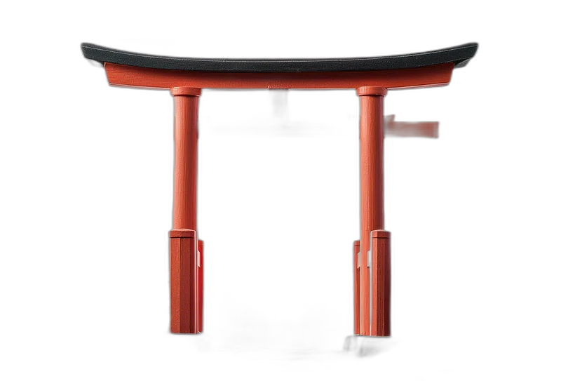

第一の間 — Social Media Chamber

伝
Kaze Whisperer
Lead Strategist
影
Shadow Scribe
Content Specialist
響
Echo Phantom
Community Ranger
第二の間 — Public Relations Chamber
声
Hana Commander
PR Director
書
Scroll Messenger
Liaison Agent
第三の間 — Web Development Chamber
築
Kai Genki
Lead Architect
術
Ashi Zora
Frontend Shinobi
霊
Yoru Bane
Database Phantom
第四の間 — Video Editing Chamber
斬
Void Kira
Frame Cutter
幻
Shiro Haze
VFX Shadow
第五の間 — Graphics Chamber
墨
Ink Kuro
Brush Master
画
Fuji Nori
Pixel Assassin